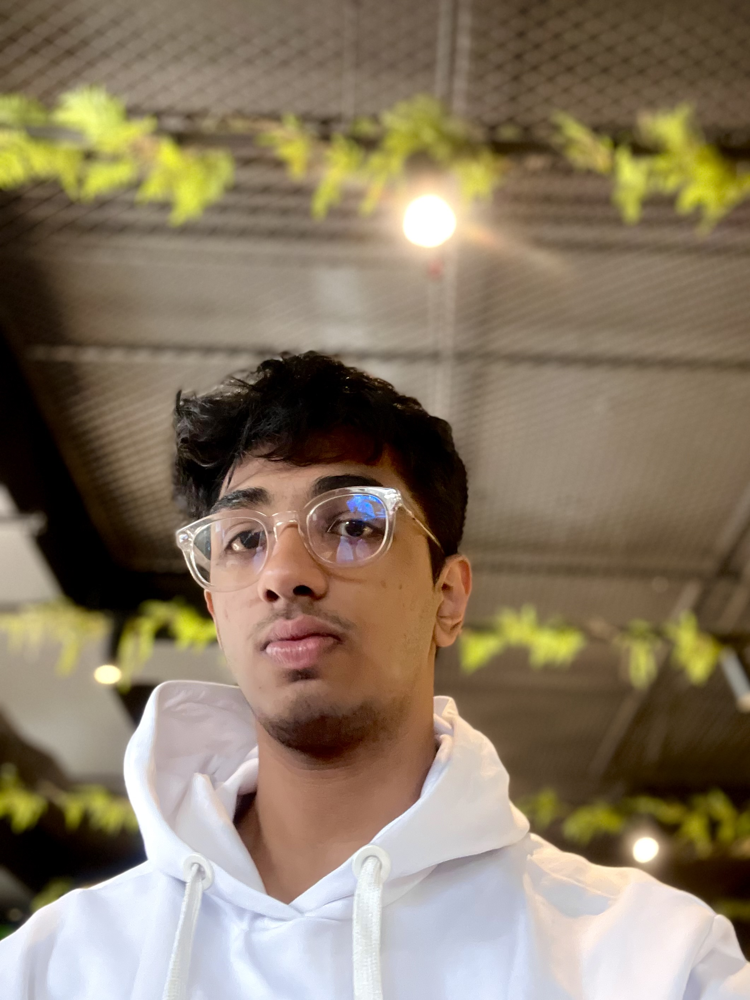

▶ Student Council Elections 2026
Principal's Representative • Radio Recess Coordinator
Amplifying your voice. Bridging the gap. Making the school actually good.

Hey, I'm Ishaan Singh and I'm running for two roles that I genuinely care about: Principal's Representative and Radio Recess Coordinator.
I believe school should be a place where every student feels heard, not just during assemblies, but every single day. Whether it's bringing your concerns directly to top of the school or having a break that's actually entertaining- I want to make that happen.
I'm the kind of person who shows up, stays behind, and remembers that the small things matter just as much as the big ones.
Your direct line to school leadership. I'll carry your concerns to the top and bring answers back.
Break shouldn't be boring. I'll make it a vibe with music, announcements, and energy that gets you through the day.
Not fake promises- real, actionable goals for both roles.
Not performatively- genuinely. I take notes, follow up, and believe every concern deserves a real response.
Running for both positions isn't overreach- it's a commitment to be involved on multiple fronts, from the broadcast to the boardroom.
Radio Recess needs creativity. Principal's Rep needs strategy. I bring both- and I know which hat to wear when.
It sounds small, but a great recess improves mood, focus, and school culture. I take that responsibility seriously.
I'll tell you what I've done, what I couldn't do, and why- every single term. No vague updates.
This isn't a line on a resume. I want to make school genuinely better for the people actually in it every day.